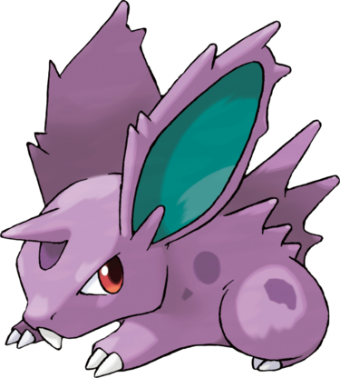

Nidoran♂ est un Pokémon mâle de couleur mauve. Son dos est muni de trois rangées de piquants. Ses grandes oreilles, dont l'intérieur est bleu canard, sont cornées. Sa peau est tachetée de violet sur chaque côté de son corps. Sa mâchoire ne compte qu'une dent et ses yeux sont rouges. Ce quadrupède possède deux griffes à chacune de ses pattes, ainsi qu'une corne sur son front.